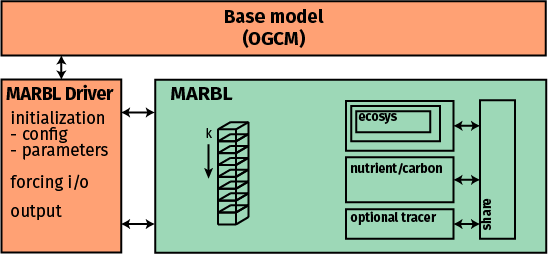

Introduction to MARBL framework¶
Tracer equation view of biogeochemistry¶
MARBL is designed to be a modular implementation of ocean biogoechemistry suitable for coupling to ocean general circulation models (OGCM). In the OGCM context, the prognostic equation governing the evolution of an arbitrary tracer \(\chi\) in the ocean is
where and \(B_\chi(\mathbf{x})\) is the sum of sources minus sinks for \(\chi\), computed as a function of the model state vector, \(\mathbf{x}\).
The OGCM computes the lefthand-side of (1) (time tendency, advection, diffusion); MARBL’s role is to compute the righthand-side (\(B_\chi(\mathbf{x})\)). MARBL returns this tendency to the OGCM, which steps (1) forward in time. MARBL also computes air-sea fluxes for constituents like CO2; the OGCM is responsible for handling these in a manner consistent with its numerics. MARBL also returns diagnostic output, including intermediate terms used in the computation of \(B_\chi(\mathbf{x})\), such as net primary productivity or grazing of phytoplankton. The OGCM must compute diagnostics relating to the total tracer concentration and terms from the righthand-side of (1).
Implementation overview¶
MARBL is compiled as a standalone library with no explicit dependencies on aspects of the OGCM code. The OGCM includes a MARBL driver, which is responsible for all communication with MARBL making use of MARBL’s interface layer.
MARBL is configured to operate on vertical columns. The OGCM passes data into MARBL on these columns, including information describing the domain (i.e., dz or the vertical layer thickness, which may vary in time).
MARBL returns data on columns, which must then be remapped back to the OGCM’s data format.
